3330D04 BRAKE SERVO - R.R. - Includes separation from master cylinder (pump) - for versions with Adaptive Cruise Control (A.C.C.).
- Path
- Procedures > 33 BRAKES > 3330 HYDRAULIC BRAKING SYSTEM > 3330D BRAKE VACUUM SYSTEM > 3330D04 BRAKE SERVO - R.R. - Includes separation from master cylinder (pump) - for versions with Adaptive Cruise Control (A.C.C.).
- Kind
- repair procedure (removal / refitting; the operation number is the code)
- Applies to
- all engines; all production periods
- Interactive page
- https://sloeber94.github.io/elrnDB-lThss/en/#/156182
Applies to: all engines; all production periods
 Removing
Removing
 Refitting
Refitting- Open the boot, remove the cover on the left hand side and disconnect the negative battery lead.
Applies to: engines: 3.0 V6, 3.2 V6; all production periods
See in Op. 1048A21 AIR INLET HOSE FROM INTAKE TO FILTER - R.R.
See in Op. 1048A28 vacuum air circuit resonator pipe - r+r
See in Op. 1016A42 LEFT CYLINDER HEAD IGNITION COIL COVER - R.R.
See in Op. 1048A11 Air filter assembly - R.R. for versions with automatic transmission
Applies to: engines: 2.4 20V, 2.4 JTD 10V; all production periods
See in Op. 1048A28 vacuum air circuit resonator pipe - r+r
See in Op. 1048A21 AIR INLET HOSE FROM INTAKE TO FILTER - R.R.
Applies to: engines: 2.0 TB; all production periods
See in Op. 1048A50 air inlet pipe to turbocharger - r + r
-
See in Op. 1048A21 AIR INLET HOSE FROM INTAKE TO FILTER - R.R.
Applies to: all engines; all production periods
1. Open the band (1a) and release the wiring (1b) on the gearbox bowden cable mounting bracket (1c), then disconnect the electrical connector (1d) for the gearbox input speed sensor.
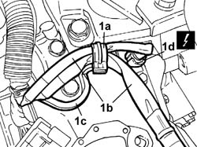
Applies to: all engines; all production periods
1. Open the retaining bands and disconnect the three gearbox main wiring connectors.
 | Description | Connector |
|---|---|---|
1 | Automatic transmission solenoid valves | L050A |
| Description | Connector |
|---|---|---|
1 | Automatic transmission solenoid valves | L050B |
| Description | Connector |
|---|---|---|
1 | Automatic transmission solenoid valves | L050C |
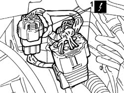
Applies to: all engines; all production periods
1. Open the protective flap (1a) and undo the nut (1b) fixing the starter motor supply lead (1c) to the junction node and move the lead between the junction node and the motor aside.
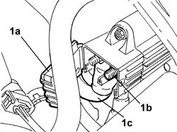
Applies to: all engines; all production periods
1. Disconnect the connectors (1a) and (1b) for the braking system check control unit (1c) and remove the actual control unit.
| Description | Connector |
|---|---|---|
1a | Braking system check control unit (NBA brake assistance) | M052 |
| Description | Connector |
|---|---|---|
1b | Braking system check control unit (NBA brake assistance) | M052 |
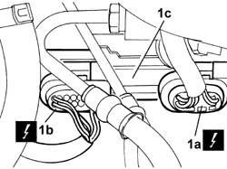
Applies to: all engines; all production periods
1. Disconnect the connector for the gearbox output speed sensor
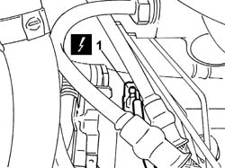
Applies to: all engines; all production periods
1. Undo the two fixing nuts (1a) and remove the mounting bracket (1b) for the gearbox wiring and the starter motor lead.
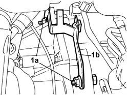
Applies to: all engines; all production periods
1. Disconnect the electrical connection for the throttle casing.
| Description | Connector |
|---|---|---|
. | Integrated throttle casing actuator | N075 |
2. Undo the fixing bolts and remove the throttle casing
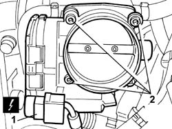
Applies to: all engines; all production periods
See in Op. 3340A12 A.B.S. hydraulic and electronic CONTROL UNIT - R.R. - Includes bleeding air
See in Op. 3330C30 brake fluid reservoir - r + r and wash inside
1. Undo the connectors (1a) for the rigid pipes (1b) between the brake pump (1c) and the ABS control unit and remove them.
2. Disconnect the electrical connections at the brake servo (2c) for the brake servo actuator (2b) diaphragm position sensor (2a).
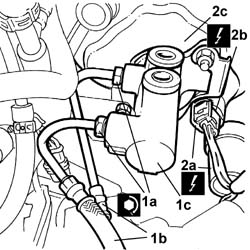
Applies to: all engines; all production periods
- Proceed as follows, working inside the vehicle:
1. Undo the bolts fixing the trim under the dashboard, driver's side.
2. Remove the trim under the dashboard, driver's side.
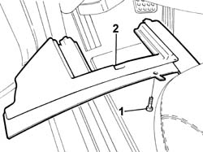
Applies to: all engines; all production periods
1. Release the steering column universal joint (1a) undoing the bolt (1b) fixing it to the steering box.
2. Working on the rear of the brake pedal, release the clips (2a) fastening the brake servo push rod (2b), then release it from the brake pedal.
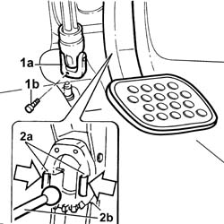
Applies to: all engines; all production periods
1. Working inside the vehicle, undo the nuts fixing the brake serov to the bodyshell and to the pedal assembly
2. Working in the engine compartment, disconnect the vacuum intake pipe from the brake servo.
3. Remove the brake servo/brake pump assembly
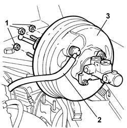
Applies to: all engines; all production periods
- If necessary, separate the master cylinder at the bench.
Applies to: all engines; all production periods
Refitting
Removing- If the master cylinder was removed previously, position it on the brake servo.
- Position the brake servo/brake pump assembly in the housing in the engine compartment.
- Tighten the nuts fixing the brake servo to the pedal assembly to the recommended torque.
 | Value - daNm | Fastening | Component | Ø |
|---|---|---|---|---|
. | 1.4 | Nut | BRAKE SERVO | M8 |
- Connect the vacuum intake pipe to the brake servo.
- Fit the brake servo push rod in the special housing on the pedal.
- Reposition the steering column universal joint securing it by tightening the fixing bolt to the recommended torque.
| Value - daNm | Fastening | Component | Ø |
|---|---|---|---|---|
. | 2 | Bolt | STEERING SHAFT MOUNTING | M8 |
- Fit the trim under the dashboard, driver's side, in the special housing and secure it using the bolts.
- Connect the electrical connections at the brake servo for the brake servo actuator diaphragm position sensor.
- Position the rigid pipes between the ABS control unit and the brake pump tightening the connectors to the recommended torque.
| Value - daNm | Fastening | Component | Ø |
|---|---|---|---|---|
. | 1.4 | Connector | PIPE FROM PUMP TO HYDRAULIC CONTROL UNIT | M10 |
See in Op. 3330C30 brake fluid reservoir - r + r and wash inside
See in Op. 3340A12 A.B.S. hydraulic and electronic CONTROL UNIT - R.R. - Includes bleeding air
- Position the throttle casing and tighten the fixing bolts.
| Value - daNm | Fastening | Component | Ø |
|---|---|---|---|---|
. | 9 | Bolt | BUTTERFLY VALVE CASE/S (MPI) | M6 |
- Connect the electrical connection for the throttle casing.
| Description | Connector |
|---|---|---|
. | Integrated throttle casing actuator | N075 |
- Position the mounting bracket for the gearbox wiring and the starter motor lead and tighten the two fixing nuts.
- Connect the connector for the gearbox output speed sensor
- Position the braking system check control unit and connect the control unit connectors.
| Description | Connector |
|---|---|---|
. | Braking system check control unit (NBA brake assistance) | M052 |
| Description | Connector |
|---|---|---|
. | Braking system check control unit (NBA brake assistance) | M052 |
- Connect the lead between the junction node and the starter motor and tighten the fixing nut and then close the protective flap.
| Value - daNm | Fastening | Component | Ø |
|---|---|---|---|---|
. | 1.5 | Nut | TERMINAL/MOTOR LEAD | M8 |
- Connect the three main gearbox wiring connectors, then close the retaining band.
| Description | Connector |
|---|---|---|
. | Automatic transmission solenoid valves | L050A |
| Description | Connector |
|---|---|---|
. | Automatic transmission solenoid valves | L050B |
| Description | Connector |
|---|---|---|
. | Automatic transmission solenoid valves | L050C |
- Connect the electrical connector for the gearbox input speed sensor, then position the wiring on the gearbox bowden mounting bracket and close the band.
Applies to: engines: 2.0 TB; all production periods
- Remove the air filter casing and hoses.
Applies to: engines: 2.4 20V, 2.4 JTD 10V; all production periods
See in Op. 1048A10 COMPLETE AIR FILTER -R.R.
See in Op. 1048A28 vacuum air circuit resonator pipe - r+r
See in Op. 1048A21 AIR INLET HOSE FROM INTAKE TO FILTER - R.R.
Applies to: engines: 3.0 V6, 3.2 V6; all production periods
See in Op. 1048A11 Air filter assembly - R.R. for versions with automatic transmission
See in Op. 1016A42 LEFT CYLINDER HEAD IGNITION COIL COVER - R.R.
See in Op. 1048A28 vacuum air circuit resonator pipe - r+r
See in Op. 1048A21 AIR INLET HOSE FROM INTAKE TO FILTER - R.R.
Applies to: engines: 2.0 TB; all production periods
See in Op. 1048A10 COMPLETE AIR FILTER -R.R.
See in Op. 1048A21 AIR INLET HOSE FROM INTAKE TO FILTER - R.R.
Applies to: all engines; all production periods
See in Op. 0010T64 Brake and/or clutch fluid - Check level and top up, if necessary
-
- Connect the negative battery terminal and position the cover on the left hand side of the luggage compartment.
Topics linked from this page (9)
- 0010T64 Brake and/or clutch fluid - Check level and top up, if necessary
- 1016A42 LEFT CYLINDER HEAD IGNITION COIL COVER - R.R.
- 1048A10 COMPLETE AIR FILTER -R.R.
- 1048A21 AIR INLET HOSE FROM INTAKE TO FILTER - R.R.
- 1048A28 vacuum air circuit resonator pipe - r+r
- 1048A50 air inlet pipe to turbocharger - r + r
- 1048A11 Air filter assembly - R.R. for versions with automatic transmission
- 3330C30 brake fluid reservoir - r + r and wash inside
- 3340A12 A.B.S. hydraulic and electronic CONTROL UNIT - R.R. - Includes bleeding air